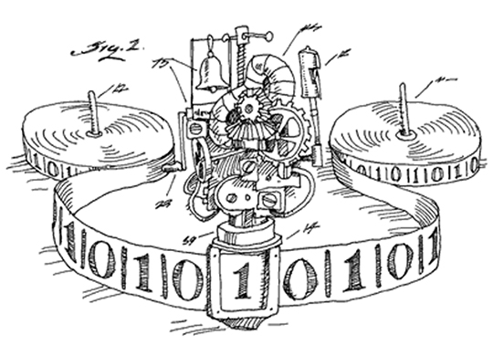
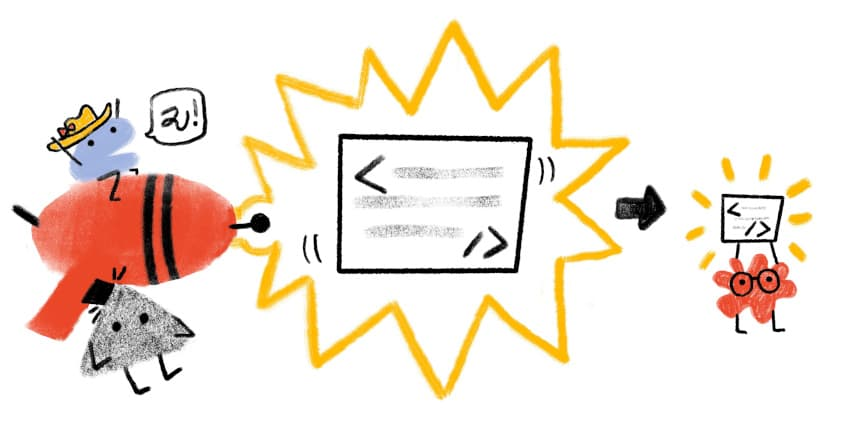

My Projects
AI Minor Projects
Collection of AI projects exploring machine learning and data processing.
Multimedia Final Project
Interactive platform with HTML5, CSS, and JavaScript for immersive storytelling.
Portfolio Website
Personal website showcasing projects and experiences.

Theory of Machines and Languages
Projects on automata theory and formal languages.

Multimedia Minor Projects
Small-scale multimedia experiments with web technologies.